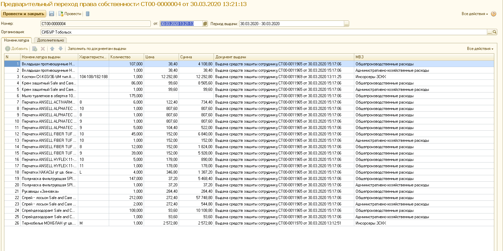

Есть возможность заполнять документ
ППС данными из документа «Предварительная
заявка» при использовании режима
коллективной выдачи с формированием
предварительной заявки.
Функция необходима, к примеру:
- Для тех
организаций, которые требуют, чтобы
оставшийся на руках у МОЛа товар после
коллективной выдачи (в случае если,
какие-то сотрудники товар не получили)
возвращался обратно на склад, а не
хранился на руках у МОЛа.
- Либо
если организация настаивает на том,
что товар должен быть оплачен только
тогда, когда его получит сотрудник и
распишется за него.
В документе указываем организацию,
период, за который хотим проанализировать
документы, нажимаем «Заполнить по
документам выдачи»(рис.1).

Рисунок 1